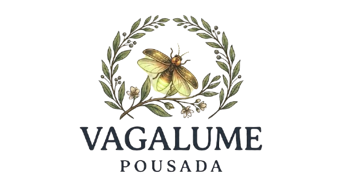
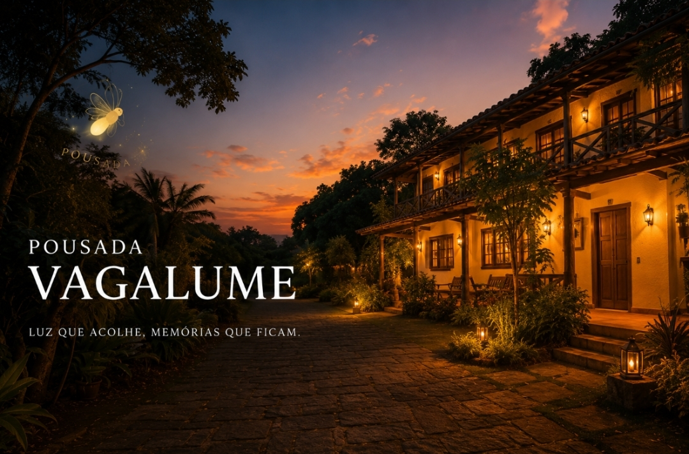
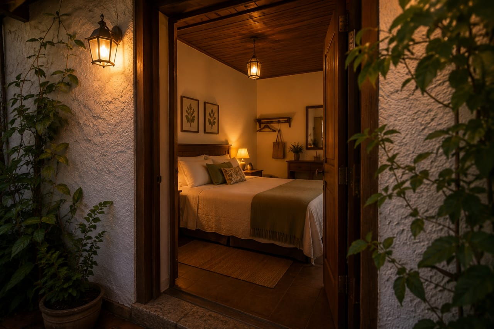
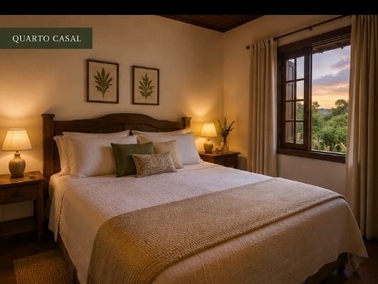

A Pousada Vagalume nasceu do desejo de criar um espaço de acolhimento, descanso e conexão. Inspirada na luz suave dos vagalumes, nossa proposta é oferecer uma experiência tranquila, cercada de cuidado, simplicidade e afeto. Aqui, cada detalhe foi pensado para que você se sinta em casa.
Na Pousada Vagalume, acreditamos que hospedar é muito mais do que oferecer um lugar para dormir. Criamos um ambiente acolhedor, cercado pela natureza e pelos encantos de Minas Gerais, para que cada visitante possa desacelerar, descansar e viver momentos especiais.

A Pousada Vagalume, foi desenhada para oferecer o máximo de conforto e tranquilidade durante a sua estadia. Cada quarto combina uma decoração charmosa com comodidades modernas, incluindo ar-condicionado, Wi-Fi gratuito, frigobar e varanda com vista para a natureza. Para entrar em contato, basta ligar para o telefone a seguir: Recepção